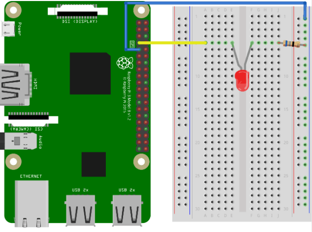

வெளியீட்டிற்கு GPIO ஐப் பயன்படுத்துதல்
இந்த அத்தியாயத்தில் நாம் ஒரு Raspberry Pi மற்றும் அதன் GPIO ஐப் பயன்படுத்தி ஒரு LED ஐ ஒளிரச் செய்வோம்.
GPIO ஐக் கட்டுப்படுத்த Node.js ஐ onoff தொகுதியுடன் பயன்படுத்துகிறோம்.
ஒரு LED விளக்கை எரியச் செய்ய, நாம் ஒரு GPIO பின்னை "வெளியீடு" ஆகப் பயன்படுத்துகிறோம், மேலும் அதை எரியச் செய்வதற்கும் அணைப்பதற்கும் (ஒளிர்வது) ஒரு ஸ்கிரிப்டை உருவாக்குகிறோம்.
எங்களுக்கு என்ன தேவை?
இந்த அத்தியாயத்தில் நாம் ஒரு LED விளக்கைக் கட்டுப்படுத்தும் ஒரு எளிய உதாரணத்தை உருவாக்குவோம்.
இதற்கு உங்களுக்கு தேவை:
- Raspberry Pi with Raspian, internet, SSH, with Node.js installed
- The onoff module for Node.js
- 1 x Breadboard
- 1 x 68 Ohm resistor
- 1 x Through Hole LED
- 2 x Female to male jumper wires
வெவ்வேறு கூறுகளின் விளக்கங்களுக்கு மேலே உள்ள பட்டியலில் உள்ள இணைப்புகளைக் கிளிக் செய்யவும்.
குறிப்பு:
நீங்கள் பயன்படுத்தும் LED வகையைப் பொறுத்து உங்களுக்குத் தேவையான மின்தடை நாம் பயன்படுத்துவதிலிருந்து வேறுபட்டிருக்கலாம். பெரும்பாலான சிறிய LED க்களுக்கு ஒரு சிறிய மின்தடை மட்டுமே தேவை, சுமார் 200-500 ஓம்கள். நீங்கள் பயன்படுத்தும் சரியான மதிப்பு பொதுவாக முக்கியமானது அல்ல, ஆனால் மின்தடையின் மதிப்பு சிறியதாக இருந்தால், LED பிரகாசமாக ஒளிரும்.
சுற்றுகளைக் கட்டும் பணி
இப்போது எங்கள் பிரெட்போர்டில் சுற்றுகளைக் கட்ட வேண்டிய நேரம் வந்துவிட்டது.
நீங்கள் மின்னணுவியலில் புதியவராக இருந்தால், Raspberry Pi க்கான மின்சாரத்தை அணைக்க பரிந்துரைக்கிறோம். மேலும் அதைச் சேதப்படுத்தாமல் இருக்க ஆன்டி-ஸ்டேடிக் பாய அல்லது கிரவுண்டிங் பட்டா பயன்படுத்தவும்.
Raspberry Pi ஐ சரியாக அணைக்க கட்டளையைப் பயன்படுத்தவும்:
pi@jassifteam:~ $ sudo shutdown -h nowRaspberry Pi இல் LED கள் ஒளிர்வதை நிறுத்திய பிறகு, Raspberry Pi இலிருந்து பவர் பிளக்கை வெளியே இழுக்கவும் (அல்லது அது இணைக்கப்பட்டுள்ள பவர் ஸ்ட்ரிப்பை அணைக்கவும்).
சரியாக அணைக்காமல் பிளக்கை இழுப்பது நினைவக கார்ட்டின் ஊழலை ஏற்படுத்தக்கூடும்.
சுற்று வரைபடம்

Raspberry Pi 3 with Breadboard. Simple LED circuit
மேலே உள்ள சுற்றுகளின் விளக்கப்படத்தைப் பாருங்கள்.
உங்கள் சுற்று இப்போது முழுமையாக இருக்க வேண்டும், மேலும் உங்கள் இணைப்புகள் மேலே உள்ள விளக்கப்படத்தைப் போலவே இருக்க வேண்டும்.
இப்போது Raspberry Pi ஐ துவக்குவதற்கும், அதனுடன் தொடர்பு கொள்ள Node.js ஸ்கிரிப்டை எழுதுவதற்கும் நேரம் வந்துவிட்டது.
Raspberry Pi மற்றும் Node.js ஒளிரும் LED ஸ்கிரிப்ட்
இப்போது எல்லாவற்றையும் அமைத்துவிட்டோம், LED ஐ எரியச் செய்வதற்கும் அணைப்பதற்கும் ஒரு ஸ்கிரிப்டை எழுதலாம்.
நம்முடைய Node.js ஸ்கிரிப்ட்களை வைத்திருக்கக்கூடிய ஒரு அடைவை உருவாக்குவதன் மூலம் தொடங்கவும்:
pi@jassifteam:~ $ mkdir nodetestஎங்கள் புதிய அடைவிற்குச் செல்லவும்:
pi@jassifteam:~ $ cd nodetestஇப்போது நாம் Nano Editor ஐப் பயன்படுத்தி "blink.js" என்ற புதிய கோப்பை உருவாக்குவோம்:
pi@jassifteam:~ $ nano blink.jsகோப்பு இப்போது திறக்கப்பட்டு உள்ளமைக்கப்பட்ட Nano Editor உடன் திருத்தப்படலாம்.
பின்வரும் குறியீட்டை எழுதவும் அல்லது ஒட்டவும்:
blink.js
let Gpio = require('onoff').Gpio; //include onoff to interact with the GPIO
let LED = new Gpio(4, 'out'); //use GPIO pin 4, and specify that it is output
let blinkInterval = setInterval(blinkLED, 250); //run the blinkLED function every 250ms
function blinkLED() { //function to start blinking
if (LED.readSync() === 0) { //check the pin state, if the state is 0 (or off)
LED.writeSync(1); //set pin state to 1 (turn LED on)
} else {
LED.writeSync(0); //set pin state to 0 (turn LED off)
}
}
function endBlink() { //function to stop blinking
clearInterval(blinkInterval); // Stop blink intervals
LED.writeSync(0); // Turn LED off
LED.unexport(); // Unexport GPIO to free resources
}
setTimeout(endBlink, 5000); //stop blinking after 5 secondsகுறியீட்டைச் சேமிக்க "Ctrl+x" ஐ அழுத்தவும். "y" உடன் உறுதிப்படுத்தவும், மற்றும் பெயரை "Enter" உடன் உறுதிப்படுத்தவும்.
குறியீட்டை இயக்கவும்:
pi@jassifteam:~ $ node blink.jsஇப்போது LED மீண்டும் அணைவதற்கு முன்பு 5 விநாடிகள் (10 முறை) ஒளிர வேண்டும்!